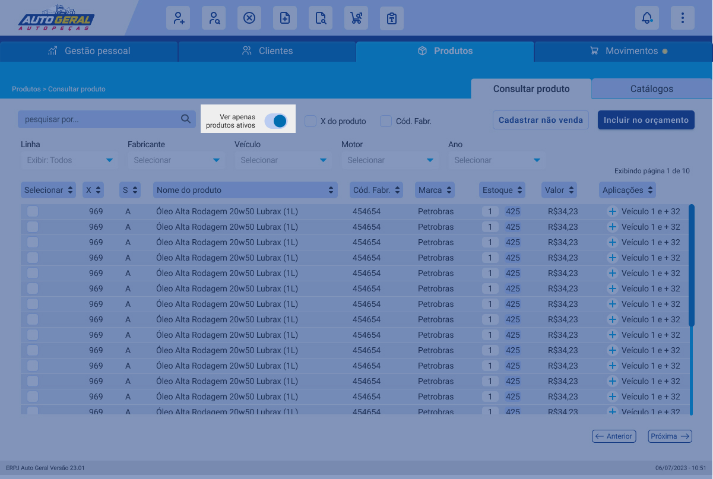
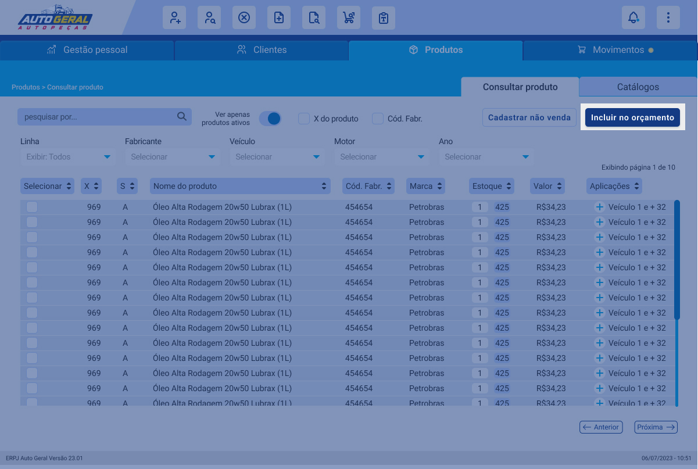
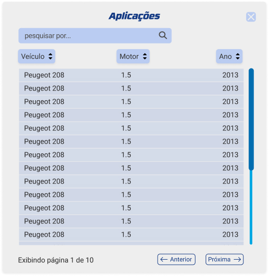
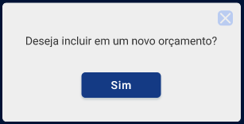
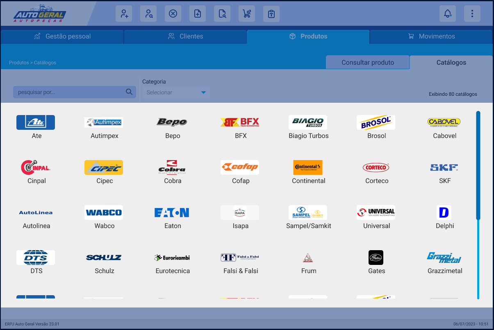

Instrução de Trabalho
{Escreva o Título do Projeto}
| Elaboração | Aprovação | ||||
|---|---|---|---|---|---|
| Nome | Visto | Data | Nome | Visto | Data |
| Nathália Kramer, Raphael Girardi | 25/08/2023 | {Escreva o nome de quem aprovou o projeto} | {Escreva a data do visto de aprovação no formato DD/MM/AAAA} | ||
1. Objetivo
Apresentar as funcionalidades e recursos disponíveis do usuário vendedor.
2. Referências
Demais arquivos de tutorial vendedor: Acesso, Gestão pessoal, Clientes, Movimentos.
3. Definições
Não aplicável
4. Procedimentos e Responsabilidades
4.1. Aba de Produtos
Nesta aba o usuário pode procurar por produtos.
4.1.1 Produtos
4.1.2 Barra de Pesquisa
Utilize a barra de pesquisa para encontrar produtos. Digite termos como código x, nome do produto, código do fabricante ou marca.

4.1.3 Chaves
Clique na chave Ver apenas produtos ativos para exibir somente os produtos em funcionamento.
4.1.4 Caixa de Seleção
Habilite pesquisas específicas ao clicar nas duas caixas de seleção: uma para o X do produto e outra para o código do fabricante.
4.1.5 Filtros
Encontre uma lista de filtros logo abaixo da barra de pesquisa. Use esses filtros separadamente ou juntos conforme sua necessidade. Além disso, abaixo da barra de pesquisa e/ou dos filtros X do produto e código do fabricante , você pode escolher filtros adicionais como linha, fabricante, veículo, motor e ano.
4.1.6 Botão de Cadastrar Não Venda
Acesse o botão Cadastrar não venda no canto superior direito da tela para efetuar um registro de não venda.
4.1.7 Botão de Incluir no Orçamento
Para adicionar produtos ao orçamento, clique no botão Incluir no orçamento no canto superior direito da tela. No centro da tela, você encontrará uma tabela com os produtos disponíveis.
4.1.8 Orientações para Interagir com a Tabela
- Selecionar: Escolha produtos e suas quantidades nesta coluna.
- X: Localize o código X do produto nesta coluna.
- S: Consulte a sequência na coluna S .
- Nome do Produto: Acesse o nome do produto nesta coluna.
- Código Fabricante: Verifique o código do fabricante nesta coluna.
- Marca: Encontre a marca do produto nesta coluna.
- Estoque: Verifique o estoque do produto. Itens com fundo branco indicam o estoque da loja atual, enquanto
os com fundo azul são da rede toda. - Valor: Consulte o preço do produto nesta coluna.
- Aplicações: Confira as aplicações do produto nesta coluna.
4.1.9 Para Interagir com a Tabela
Selecione os produtos e as quantidades desejadas. Use os ícones + e - para aumentar e diminuir a quantidade, ou insira a quantidade desejada no campo numérico.
4.1.10 Botão +
Ao clicar no botão + na última coluna da tabela, uma nova tabela será aberta. Nessa tabela, você verá todas as aplicações relacionadas ao produto selecionado.

4.1.11 Para Navergar entre as Páginas
Para navegar entre as páginas que exibem a lista de produtos, utilize os botões Anterior e Próximo localizados na parte inferior direita da tela.
4.1.12 Interagindo com a Tabela
Depois de clicar em um produto na tabela, um popup com informações detalhadas sobre o produto será exibido. No canto superior esquerdo, você verá uma imagem ilustrativa do produto. Para aumentar a visualização dessa imagem, clique no botão Ampliar Imagem.
4.1.13 Especificações do Produto
Nesta seção, você encontrará o nome do produto e logo abaixo dele, a descrição correspondente.
4.1.14 Previsão
No canto superior direito, o usuário pode verificar a previsão do produto caso seja vendido naquele momento.
4.1.15 Disponibilidade
Nesta área o usuário pode consultar a disponibilidade do produto na loja atual em que está e em toda a rede possibilitando o usuário consultar as lojas em que tem disponível.
4.1.16 Ver Lojas
Se o usuário clicar em ver lojas abre um popup com uma tabela com o estoque de todas as lojas.
4.1.17 Características do Produto
Ao centro da tela o usuário pode consultar as características principais do produto, sendo elas código x, código s, nº fabricante, situação, linha, marca, volume, garantia.
4.1.18 Aplicações
No canto inferior esquerdo, os usuários podem consultar as aplicações do produto. A tabela possui três colunas: veículo, motor e ano. Além disso, há uma barra de pesquisa que permite aos usuários procurar por um modelo específico.

4.1.19 Campo de Alterar Quantidade
Nesse campo o usuário pode alterar a quantidade de itens.
4.1.20 Valor
No canto inferior direito o usuário pode visualizar o valor do produto, também possui o valor do produto com descont
4.1.21 Botão Cadastrar Não Venda
Ao clicar no botão Cadastrar não venda o usuário poderá efetuar a ação de não venda.
4.1.22 Filtro de Orçamento
Nesse campo de filtro o usuário pode escolher para qual orçamento o item vai ser incluído caso exista mais de um orçamento aberto, que será exemplificado a seguir.

4.1.23 Botão Incluir no Orçamento
Ao clicar no botão Incluir no orçamento o usuário irá incluir o item que está na tela junto a quantidade selecionada.
4.1.24 Popup de Informação Auxilixar
Após clicar no botão de incluir no orçamento o usuário é redirecionado a um popup que contém uma informação para auxiliar o usuário no uso do sistema, nessa tela contém a quantidade do item que foi incluída no orçamento e qual é o item que foi incluído, tendo um botão Ok para finalizar a ação.
4.1.25 Tela de Produto sem Filtro de Orçamento
Se o usuário chegar nessa tela e ela estiver sem o campo de filtro de orçamento é porque ele começou uma venda pelos produtos.
Exemplo:

4.1.26 Popup de Confirmação
Após clicar no botão de incluir no orçamento o usuário é redirecionado a um popup que contém uma pergunta Deseja incluir em um novo orçamento? e um botão Sim que é para confirmar a ação, ao clicar em sim se inicia um novo orçamento com o produto selecionado.
4.2. Catálogos
Nesta aba o usuário pode busacar pelos catálogos que usa no dia a dia
4.2.1 Pesquisa por catálogos
Para realizar uma pesquisa no catálogo da tela, siga as etapas abaixo:
- Clique na barra de pesquisa.
- Digite o que você está procurando.
- Clique no ícone da lupa ou pressione a tecla Enter para iniciar a pesquisa.
4.2.2 Escolhendo Catálogo
Para escolher o catálogo desejado, siga as instruções abaixo:
- Observe o filtro de categoria.
- Escolha a categoria do catálogo que você deseja.
- Você pode usar o filtro separadamente ou combiná-lo com a barra de pesquisa para aprimorar sua busca.
4.2.3 Logos Interativas
As logos dos catálogos possuem interatividade. Ao clicar na logo do catálogo desejado, você será redirecionado para o próprio catálogo, que pode ser um site, um arquivo ou um aplicativo, dependendo do caso.
5. Registros
6. Histórico de Revisões
| Revisão | Descrição | Revisor | Data |
|---|---|---|---|
| 00 | {Escreva a descrição da revisão} | {Escreva o nome do Revisor} | {Escreva a data da revisão no formato DD/MM/AAAA} |